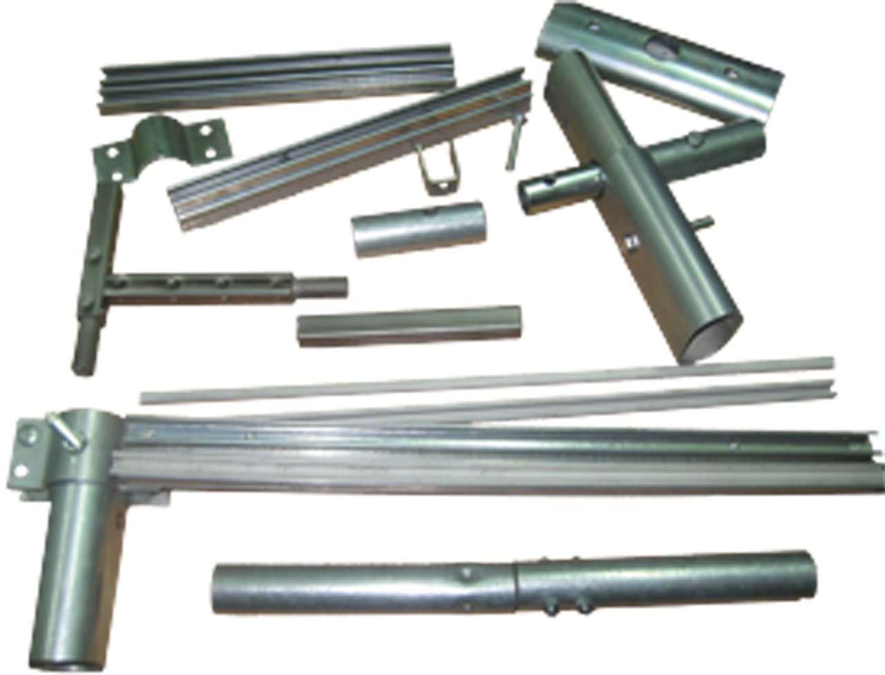

Теплици от компании "МетАгро"
Компания "МетАро" - предприятие, специализирующееся на производстве и продаже изделий из металлопроката, предлагает Вам свою продукцию - модульные тепличные системы.
Наша компания с 2011 года работает в агропромышленой сфере. производство гарантирует максимальную надежность конструкций и оптимальное соотношение цены и качества.
Тепличные системы "МетАгро" уже установлены и используються круглогодично под Херсоном, Харьковом, Полтавой, Львовом, Хмельнициким и других городах Украины, а также в странах ближнего зарубежья
Каркас теплиц выполнин из оцинкованной стали, предотвращающй каррозию металла и увеличивает срок службы изделия. основу каркаса теплиц состовляют трубы овального сечения. Применение овальной трубы в каркасах больших габаритов позволяет уменьшить металлоемкость и увеличить прочность конструкции.
В конструкторском бюро НАУ им. Н.Е.Жуковского "ХАИ" каркасы наших теплиц были просчитаны на статические и динамические нагрузки. Результаты расчетов подтверждены испытаниями на прочность путем моделирования нагрузки.
Конструкция теплиц позволяет быстро осуществлять монтаж и демонтаж, а также увеличивать/уменьшать добовляя/исключая новые элементы каркаса. Разборной каркас позволяет легко транспортировать теплицу к месту установки, а упаковка компактна и удобна для перевозки.
Сборка каркаса теплици осуществляеться при помощи стандартных метизов по металлу. Каркас теплиц крепиться к грунту при помощи анкеров или столбиков, и при необходимости усиливается бетоном (в зависимости от типа грунта). А, при наличии подготовленного фундамента - с помощью уголков.
В комплекте прилагаеться инструкция, где подробно описан каждый шаг по сборке и установке, с ее помощью покупатель может осуществить монтаж сам. По желанию заказчика монтаж может быть произведен изготовитеем. По вопросам сборки можно обращаться к нашим специалистам.